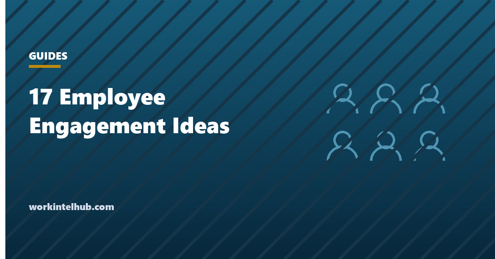
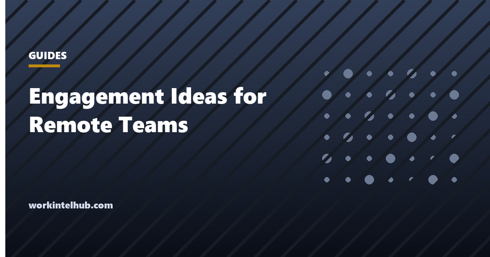
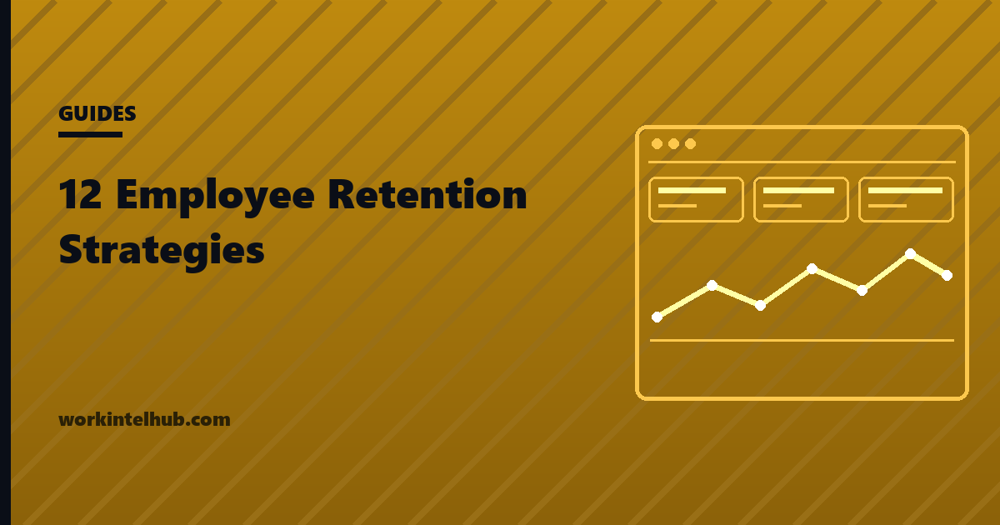

Engagement17 Employee Engagement Ideas That Do Not Feel Forced
17 employee engagement ideas that change the conditions of the work, not the snack budget, each with the situation where it fails.
Topic
Engagement describes the conditions of the work: whether people know what good looks like, have what they need, and get told when it lands. Retention is what happens downstream when those conditions hold or fail. Most advice on both is written for executives who control pay and headcount. These articles are written for the line manager who controls neither and still owns the outcome, and they say plainly when a problem needs escalating rather than absorbing. Gallup's meta-analysis of more than 112,000 business units is the evidence base, treated as the quartile comparison it is rather than as proof of cause.
New to this topic? 17 Employee Engagement Ideas That Do Not Feel Forced is the piece we would read first.

Engagement17 employee engagement ideas that change the conditions of the work, not the snack budget, each with the situation where it fails.

Engagement11 employee engagement ideas remote teams can use, built on written context, async recognition and time zone fairness, each with where it fails.

Engagement12 employee retention strategies a line manager can run without budget authority, each with the situation where it fails.